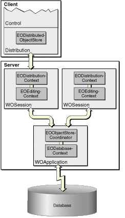

The EOControl layer is very abstract, which allows it flexibility. Its abstract nature allows EOControl objects to live independent of any persistence scheme, database, or data source. The client and server parts of a Java Client application have the exact same EOControl layer; it is the layer that plugs into EOControl that differs for the client and the server. On the server side, EOControl objects talk to the database using EOAccess; on the client side, EOControl objects talk to the server using EODistribution. The EOControl classes you will encounter in development are introduced here.
An EOEnterpriseObject is a flexible representation of your business logic. EOEnterpriseObjects are conceptually abstract—they are ignorant of specific data stores and data-access mechanisms. All EOEnterpriseObjects conform to these behaviors:
student.valueForKey("name")
student.takeValueForKey("name", "Ernest"). These behaviors provide convenience and flexibility for your business objects, while enhancing performance and offering important business functionality.
EOEnterpriseObject is an interface, so you never instantiate it. Rather, WebObjects provides two classes that implement EOEnterpriseObject:
java.lang.Object,
implements com.webobjects.eocontrol.EOEnterpriseObject.An EOEditingContext manages the graph of enterprise objects in your application. The EOEditingContext is responsible for ensuring that all parts of your application stay in sync with one another and with your data store—it is the WebObjects change-tracking mechanism. When an enterprise object changes, the EOEditingContext sends a notification so that other parts of the application, such as the user interface, can update themselves accordingly.
The EOEditingContext also manages undo and revert and is the object through which you save changes to the database. EOEditingContext is designed to abstract these database operations from your business objects, which keeps any database-specific information from living inside your business logic.
An EOEditingContext is always associated with an instance
of a parent object store. In Java Client applications, the client
and server have separate editing contexts. The client-side editing
context is associated with a client-side object store, com.webobjects.eodistribution.client.EODistributedObjectStore;
the server-side editing context is associated with a server-side
object store, com.webobjects.eoaccess.EODatabaseContext,
as illustrated in Figure 2-2.
You can think of an EOEditingContext object as a glorified database transaction object. In WebObjects, a request to fetch data from a data store is usually done from the control layer, and fetches done from the control layer almost always happen from within an EOEditingContext. Once data is fetched into objects, an EOEditingContext manages the graph of fetched objects, tracks changes to those objects, and is the object through which you invoke data store commits.
Figure 2-2 Editing contexts and object stores
Because database fetches are expensive, you rarely ask for all the data at once. Rather, you provide criteria for the data to be fetched with an EOFetchSpecification. An EOFetchSpecification describes the objects to be retrieved using an EOQualifier (an object that restricts the selection of database rows based on a specified criterion).
To maintain database independence, EOControl provides an internal mechanism to identify objects. Other systems use database primary and foreign keys to identify objects, but these keys don't represent data (they represent locations in the data store) and so shouldn't be a part of your business logic. The algorithm used to generate EOGlobalIDs is designed to guarantee completely unique identifiers.
A subclass of EOGlobalID, EOTemporaryGlobalID, identifies objects before they are committed to the data store.
A single Java Client application can access data from different data stores. In this case, each EOModel is usually associated with a different data store, and this added complexity requires an object to manage it. Each EOModel in an application has a corresponding EODatabaseContext object. The EOObjectStoreCoordinator sits between the client's editing contexts and the EODatabaseContext objects, and isolates the editing contexts from the application's data sources.